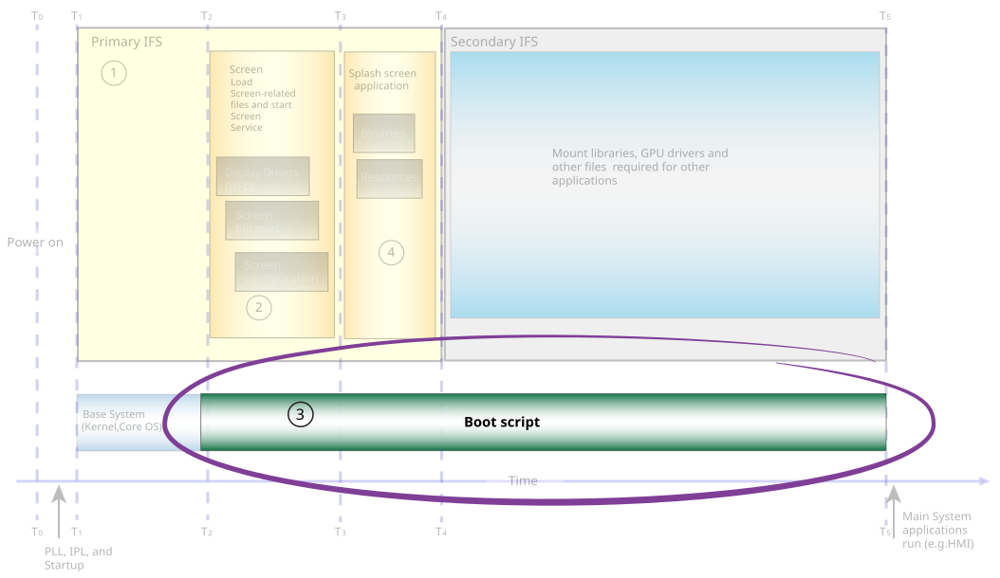

With the QNX OS and its microkernel architecture, you can modify the script section
in the buildfile to start services or applications earlier to take advantage of any idle time on the CPU.
This flexibility lets you start certain components in your system earlier.
The script section is used to generate the boot script for a system.
Figure 1. Optimize the script section in the buildfile.

You can start applications before starting some device drivers—if it's sensible for your system and
the hardware platform permits you to start device drivers as required. For example, if your system requires
network connectivity, you would need to start a network driver, but because the splash screen application
doesn't require network connectivity, you could, in fact launch your splash screen application before you
start the network driver. This way, the system can show the content on the display more quickly because
it won't need to wait for the network driver to start.
CAUTION:
This technique requires that you have a good understanding of the configuration of your buildfile. If
any file is missing in the configuration, your system may fail to boot.
Note:
Some hardware platforms require that all devices drivers be started at one time. For those platforms,
you might not be able to use this technique to start applications before some of the device drivers.
Typically, the default boot script that comes with your BSP
(see the QNX Software Center for the BSPs)
has
Screen configured to start as one of the last services. We recommend that
you start the following services in this order as soon as you can:
-
The Screen service (screen)
Note:
Don't use the an "&" (ampersand) to start
screen in the background because the
Screen service automatically puts itself into background when it
starts. If you specify the "&", a
waitfor may be executed, which may increase
the time it takes to show content on the display. For more information, see
Consider the placement of waitfor statements.
- Your Screen application(s) (e.g. the splash screen application)
Other boot script considerations
In some situations, you might want to start some services, such as slogger2 early so that
you can debug your system. This practice is useful in the early stages of the development process. Later, when your system is ready for production you might disable slogger2. Nonetheless, in some cases, you might
find it useful to keep services such as slogger2 enabled, because they can help customer
support troubleshoot issues in production systems.
For applications that use hardware rendering (OpenGL ES, OpenVG, blitting, etc.), you can choose
to start the hardware-rendering application at the same time as the splash screen application. Running the
applications in parallel won’t increase the time it takes to show content on the display, despite the fact
that the hardware rendering application may cause device drivers to start, unless there’s CPU or disk
contention.
However, if during the startup sequence or during the transition from one application to another a
framebuffer gets created, there’s potential for the following to occur in the splash screen application:
-
if the content has been shown, animation (such as a video feed) the display may experience momentary
pausing or stutter
- if the content hasn't been shown, the time required to show the content may increase